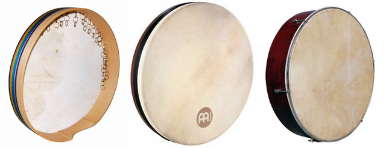

|

Klang
Klangclose
Bei Schlägen in der Mitte des Trommelfells entstehen die dunklen Töne. Je weiterer zum Rand hin die Schläge erfolgen, desto heller wird sie. |
Herkunft
Herkunftclose
Der früheste Beweis für den DAP (Daf) stammt aus Sassaniden-Iran. Das Wort daf ist daher die arabisierte Form des Wortes dap. Die Anwesenheit des iranischen Daphs in den Reliefs von Behistun deutet darauf hin, dass es vor dem Aufstieg des Islam existierte. |
Form
Formclose
|
|
Rahmen
Rahmenclose
Holzrahmen, der einseitig mit Ziegenfell oder Schaffell bespannt ist. |
Rückseite
Rückseiteclose
bestehen allgemein aus einem flachen kreisrunden, häufig aus Platanenholz. |
mehr...
|